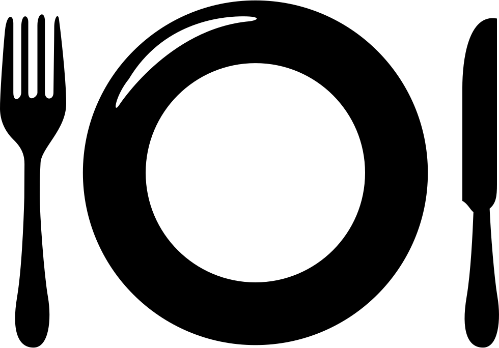

(Lite text om något)
- måndag - torsdag: Stängt
- fredag: 16:00-22:00
- lördag: 16:00-22:00
- söndag: 16:00-20:00
Öppettider
(Lite text om något)
(Lite text om något)
(Lite text om något)
(Lite text om något)